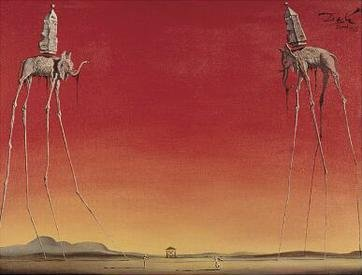

The Elephants
Salvador Dalí · 1948 · Oil on canvas · 49 × 60 cm · Private collection
In copyright. Look and learn: shown for study, not for download.
Dalí's long-legged elephants first appeared four years earlier, in Dream Caused by the Flight of a Bee Around a Pomegranate of 1944; here they are the whole picture. The obelisks on their backs come from Bernini's sculpture in Rome of an elephant carrying an ancient obelisk, a source Dalí named more than once. The canvas is small, 49 by 60 centimetres. He turned forty-four in 1948, the year he and Gala moved back from the United States to their house at Port Lligat in Spain.